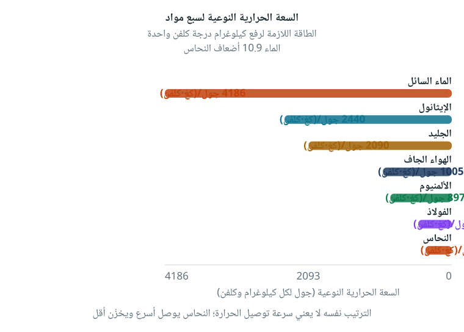

السعة الحرارية النوعية
Specific Heat Capacity
الطاقة اللازمة لرفع كيلوغرام مادة درجة كلفن واحدة: 4,186 جول للماء السائل مقابل 385 جول للنحاس، ولهذا يخزّن الماء الحرارة ويتأخر في التسخين والتبريد.
السعة الحرارية النوعية c هي الحرارة اللازمة لرفع وحدة كتلة درجة واحدة: Q = m·c·ΔT. تُقاس بالجول لكل كيلوغرام وكلفن، وهي خاصية مكثّفة تخصّ المادة لا الجسم، بخلاف السعة الحرارية الكلية C = m·c التي تتضاعف مع الكتلة.
قيمتها تحدد السلوك الحراري العملي: الماء 4,186 جول/(كيلوغرام·كلفن) يحمله على أن يكون مبردًا ومخزنًا حراريًّا جيدًا، والنحاس 385 يجعله مناسبًا لنقل الحرارة بسرعة لا لتخزينها. الهواء الجاف عند ضغط ثابت 1,005، أي أن تسخين كيلوغرام هواء يحتاج ربع طاقة تسخين كيلوغرام ماء للدرجة نفسها. ولهذا تختلف أحجام المبادلات الحرارية بين الماء والهواء بنحو أربعة أضعاف في الطاقة لكل كيلوغرام، وتزيد الفجوة كثيرًا عند المقارنة بالحجم لأن كثافة الهواء أقل بمئات المرات.
كيف تعمل الظاهرة؟
الحرارة المضافة تُوزَّع على أنماط حركة الجزيء: انتقال، دوران، اهتزاز. كل نمط يُنشَّط يستقبل نصيبًا من الطاقة، وعدد الأنماط المتاحة يحدد السعة. في الغازات الأحادية الذرة ثلاثة أنماط انتقالية فقط، فتكون السعة صغيرة؛ وفي الجزيئات متعددة الذرات تُضاف الدوران والاهتزاز فترتفع السعة وتتغير مع الحرارة عند تفعيل أنماط جديدة.
في الماء توجد شبكة روابط هيدروجينية تُعاد ترتيبها باستمرار، فتُخزَّن طاقة في كسر الروابط وإعادة بنائها لا في رفع السرعة فقط. هذا يرفع السعة إلى ضعف سعة الجليد تقريبًا. في الأجسام الصلبة يهتز الذرّ حول موقعه، ويعطي قانون دولونغ–بيتي حدًّا أعلى 3R ≈ 25 جول/(مول·كلفن) لكل ذرّة عند درجات عالية، وهو حدّ يتحقق في معظم الفلزات.
العلاقة بالأرقام
تطبيق Q = m·c·ΔT على كيلوغرام ماء و10 كلفن يعطي 41.86 كيلوجول، أي 4,186 جول لكل كلفن. النسبة بين الماء والنحاس 4,186 ÷ 385 = 10.9، ولهذا ترتفع حرارة مقلاة نحاسية أسرع بعشر مرات من كتلة ماء مساوية عند التسخين بالقدر نفسه.
السعة المولية للماء 4.186 × 18.015 = 75.4 جول/(مول·كلفن)، وهي قريبة من 9R، أي أن الماء يخزّن طاقة أكبر من المتوقع من عدد ذراته. أما الهواء فيفرّق بين c_p = 1,005 وc_v = 717 جول/(كيلوغرام·كلفن)، والفرق 288 يقارب ثابت الغاز للهواء، لأن التسخين عند ضغط ثابت يبذل شغل تمدد إضافيًّا.
مفاهيم متقاربة
الخلط الأول: مساواة السعة الحرارية بالتوصيل الحراري. النحاس يوصل الحرارة سريعًا لكنه يخزّن قليلًا، والماء يخزّن كثيرًا لكنه يوصل ببطء؛ ولهذا تُصنع أواني الطبخ من فلز وأسطوانة الماء من ماء. الخلط الثاني: الخلط بين c_p وc_v؛ الفرق يصل إلى 40% في الغازات ويهمَل في السوائل والصلب.
الخلط الثالث: تفسير بطء تسخين الماء بكثافته العالية. الكثافة تحدد الطاقة لكل حجم، أما السعة النوعية فتحدد الطاقة لكل كتلة، والبطء يبقى عند مقارنة الكتل نفسها. والخلط الرابع: ظنّ أن c ثابتة للمادة؛ تتغير مع الحرارة بنسبة قد تتجاوز 10% بين 0 و100 °م للماء نفسه، وتتغير بشدة أكبر في الغازات.
حدود التطبيق
لا تُعرَّف c عند تغيّر الطور لأن ΔT يساوي صفرًا؛ تُستبدل هناك بالحرارة الكامنة. وحتى بعيدًا عن التحول تتغير c مع الحرارة والضغط، فالقيمة الواحدة تصلح لتقدير هندسي لا لحساب حراري دقيق؛ في الحسابات الدقيقة تُدمج c(T) على المدى.
قانون دولونغ–بيتي يفشل تحت درجة ديباي، حيث تنخفض السعة إلى الصفر عند الصفر المطلق بدل أن تبقى 3R. وفي الماء المحصور في مسام نانوية أو قرب أسطح تختلف السعة عن قيمتها الحجمية. وفي الغازات الحقيقية عند ضغوط عالية تعتمد c_p على الضغط، ولا تكفي القيم الجدولية عند الضغط الجوي.

| الكمية | القيمة | المصدر |
|---|---|---|
| السعة الحرارية النوعية للماء السائل | 4,186 جول/(كيلوغرام·كلفن) | [1] |
| السعة الحرارية النوعية للنحاس | 385 جول/(كيلوغرام·كلفن) | [2] |
| السعة الحرارية النوعية للهواء عند ضغط ثابت | 1,005 جول/(كيلوغرام·كلفن) | [2] |
| السعة الحرارية المولية للماء | 75.4 جول/(مول·كلفن) | [3] |
المصادر
- 1 Water — Specific Heat Capacity — The Engineering ToolBox. www.engineeringtoolbox.com/specific-heat-capacity-water-d_660.html · اطُّلع عليه 2026-11-16
- 2 Solids — Specific Heat Capacities — The Engineering ToolBox. www.engineeringtoolbox.com/specific-heat-solids-d_154.html · اطُّلع عليه 2026-11-16
- 3 OpenStax College Physics 2e — Temperature Change and Heat Capacity — OpenStax. openstax.org/books/college-physics-2e/pages/14-2-temperature-change-and-heat-capacity · اطُّلع عليه 2026-11-16
استشهد بهذا المصطلح
الصيغتان مبنيتان من بيانات الصفحة نفسها: العنوان والتاريخ ورابط النسخة المنشورة.
السعة الحرارية النوعية — Specific Heat Capacity. (2026). ديوان المعرفة — انفراد. https://infiradev.com/diwan/terms/specific-heat-capacity.html
@misc{specific-heat-capacity2026,
title = {السعة الحرارية النوعية},
titleaddon = {Specific Heat Capacity},
howpublished = {{ديوان المعرفة — انفراد} — مرجع علمي عربي},
year = {2026},
url = {https://infiradev.com/diwan/terms/specific-heat-capacity.html},
urldate = {2026-11-16},
note = {مراجعة علمية: مراجعة آلية — ديوان المعرفة (روابط المصادر + عقد المحتوى + وجود الرسم) 2026-11-16}
}
راجعه: مراجعة آلية — ديوان المعرفة (روابط المصادر + عقد المحتوى + وجود الرسم) 2026-11-16 · 2026-11-16 · آخر تحديث 2026-11-16